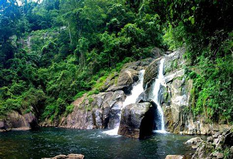

Wildlife Reserves
Wayanad is an Indian district in the north-east of Kerala state with administrative headquarters at the municipality of Kalpetta. It is the only plateau in Kerala. The Wayanad Plateau forms a continuation of the Mysore Plateau, the southern portion of Deccan Plateau. It is set high in the Western Ghats with altitudes ranging from 700 to 2100 meters. Vellari Mala, a 2,240 m (7,349 ft) high peak situated on the trijunction of Wayanad, Malappuram, and Kozhikode districts, is the highest point in Wayanad district. The district was formed on 1 November 1980 as the 12th district in Kerala, by carving out areas from Kozhikode and Kannur districts.